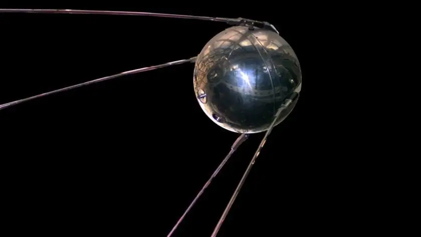

أخبار علمية ·
القمر الروسي سبوتنيك يكتب حروف عصر الفضاء – هاني الضليع

حدث ذلك في الرابع من أكتوبر/تشرين الأول 1957، حين تمكنت روسيا الشيوعية من التفوق على أميركا الرأسمالية، فأطلقت أول قمر صناعي غير طبيعي في تاريخ البشرية، إنه القمر الصناعي سبوتنيك 1 الذي حسم التفوق الفضائي أول مرة لصالح الروس في حربهم الباردة ضد الأميركيين، القوتان العظميان اللتان كانتا تتصدران المشهد العالمي منتصف القرن العشرين. لقد غير سبوتنيك شعور البشرية نحو موقعها في هذا الكون.
وسبوتنيك هو كرة معدنية مصقولة لا يتجاوز قطرها 70 سنتيمترا مزودة بأربعة لاقطات، ظل يدق بموجاته الراديوية من الفضاء قرابة ثلاثة أشهر حتى نفدت بطارياته فسقط واحترق في الغلاف الجوي الأرضي، ولقد سمع دقاته حتى هواة الراديو الذين كانوا يلتقطون إشاراته على الموجة 20 ميغاهيرتز، إذ كان يدور حول الأرض مرة كل 92 دقيقة في مدار منخفض لا يزيد ارتفاعه عن 400 كيلومتر.
ويعود الفضل في إرسال سبوتنيك إلى الفضاء إلى الصاروخ البالستي “آر 7” بمدى 3700 كيلومتر، أول صاروخ عابر للقارات يتم تطويره في الحرب الباردة، وهو الصاروخ ذاته الذي لا يزال يعمل حتى يومنا هذا في إرسال الأقمار الصناعية ورواد الفضاء. وبذلك محق هذا القمر الصناعي الضئيل استهتارات الأميركيين بأن الروسيين هم عالم متخلف من مزارعي حقول البطاطا.
وقبل أن تقدم الولايات المتحدة على أي عمل فضائي، قامت روسيا على الفور وبعد شهر وأحد فقط بإطلاق القمر الصناعي الثاني سبوتنيك 2 الذي حمل على متنه الكلبة لايكا كأول حيوان يتخذ مداراً حول الكرة الأرضية.
أذهل هذان العملان الأميركيين الذين أعادوا حساباتهم، فأطلقوا قمرهم الصناعي الأول إكسبلورر في يناير/كانون الثاني 1958 والذي يعود له الفضل في اكتشاف ما تعرف بأحزمة فان ألن الإشعاعية التي تغلف الأرض وتحميها من خطر الأشعة الكونية والجسيمات المشحونة القادمة من الشمس.
ومن ثم جاء إنشاء إدارة الطيران والفضاء الأميركية (ناسا) في أكتوبر/تشرين الأول 1958 كي تعمل على مواكبة السباق نحو الفضاء، وقد حظيت بميزانية هائلة قدرت آنذاك بـ5% من الميزانية العامة للدولة.
غير أن الروس كان لهم السبق حيث وصلت مركبة الفضاء الروسية لونا 3 إلى القمر ودارت حوله وصوّرت الوجه البعيد منه عام 1959، وهو الوجه الذي لم يكن قد رآه بشر من قبل، إذ القمر يواجه الأرض دائماً بوجه واحد، بل إن الروس نالوا المجد بإرسال يوري غاغارين كأول رائد إلى الفضاء بتاريخ البشرية وذلك يوم 12 أبريل/نيسان 1961 ليقضي على آمال الأميركيين في سباقهم نحو الفضاء، وليقطع الطريق عليهم لقرابة عشر سنوات بعد ذلك.
الجانب البعيد للقمر كما يظهر في صورة لناسا التقطت عام 2015 وكان الروس أول من التقطوا صورة لهذا الجانب عام 1959 (رويترز)
وحينئذ أعلن الرئيس الأميركي جون كينيدي أن على أميركا وقبل انتهاء عقد الستينيات أن تطأ سطح القمر بأقدام روادها، الحلم الذي تحقق بوصول نيل أرمسترونغ إلى سطح القمر، في حادثة تاريخية لم يسبق لها مثيل في حياة البشرية، وذلك في العشرين من يوليو/تموز 1969. وبذلك بدأت البوصلة تنحرف نحو التفوق الأميركي في عصر الفضاء.
واستمر السباق الفضائي المحموم بين الدولتين حتى وصلتا المريخ في السبعينيات من القرن العشرين، وقد بنت روسيا أسطولها الفضائي المتمثل في محطة الفضاء الروسية مير التي أطلقت عام 1986 وظلت تعمل حتى العام 2001 حتى بعد إطلاق محطة الفضاء الدولية عام 1998 التي جاءت إعلانا على انتهاء حرب الفضاء الباردة واتحاد القوى العالمية من أجل خدمة الأرض والبشرية.
ويُعد صعود سبوتنيك إلى مداره حول الأرض فاتحة عصر الفضاء بلا منازع. فها هي التطبيقات الفضائية بعد ستين عاما من ذلك التاريخ تملأ حياة البشر. فقد تنوعت المهمات التي من أجلها تطلق الأقمار الصناعية والتي تدور الآن حول الأرض بالآلاف، بل إن عددها يقدر بـ15 ألف قمر صناعي.
“يُعد صعود سبوتنيك إلى مداره حول الأرض فاتحة عصر الفضاء بلا منازع. فها هي التطبيقات الفضائية بعد ستين عاما من ذلك التاريخ تملأ حياة البشر.“
وترسل العشرات من الأقمار الصناعية إلى مداراتها حول الأرض كل سنة، فهناك أقمار الاستشعار عن بعد، التي يعود لها الفضل في دراسة المصادر المائية والثروات الزراعية والمسطحات الخضراء ونسب التصحر وكميات المياه الجوفية. وكذلك الأقمار الصناعية الخاصة بالأرصاد الجوية، التي حققت للعالم التعرف على حركة الرياح والغيوم والأعاصير وكميات الهطل والثلوج، وأنقذت البشرية من مخاطر جمة كانت تتهددهم بفعل الأعاصير التي كانت تجتاح البلاد دونما سابق إنذار.
وهناك أقمار التجسس والأغراض العسكرية التي هي أكثر الأقمار تكلفة وأكثرها سرية، إذ هي قادرة على التقاط صور للأرض بدقة تبلغ بضع سنتيمترات فقط من ارتفاعات تزيد على 250 كيلومترا عن سطح البحر.
لكن أهم الأقمار الصناعية التي خدمت البشرية وحولت الكرة الأرضية إلى قرية صغيرة هي أقمار الاتصالات، التي أمّنت البث التلفزيوني والاتصالات الهاتفية والرسائل وأدوات التواصل الاجتماعي الحديثة. وهذه الأقمار هي أقمار متزامنة مع الأرض وتدور حولها مرة كل 24 ساعة، وهي التي نوجه إليها صحون اللواقط الموضوعة فوق أسطح المنازل دون أن نضطر لتغيير اتجاهها في أي وقت لأنها تحافظ على موضعها في السماء طوال فترة حياتها.
وللأقمار الصناعية مدة صلاحية تحددها قدرتها في البقاء في مدارها على الارتفاع نفسه والسرعة ذاتها، ودون ذلك فإن مصيرها إلى الإفلات بعيداً أو السقوط والاحتراق في الغلاف الجوي الأرضي لتدخل على شكل مذنب بذيل طويل ترتطم شظاياه بالأرض في مكان ما، والذي يمكن مسبقاً توقعه بمعرفة الحسابات المدارية للقمر الصناعي الساقط.
وأما أجمل التطبيقات التي قدمها لنا عصر الفضاء فهي أقمار تحديد المواقع الجغرافية (جي بي أس) التي لم يعد بالإمكان الاستغناء عنها في أكثر التطبيقات الحياتية، فهي التي تحدد موقع الشخص المستخدم للهاتف المحمول، وهي التي تدلك على الاتجاهات في الخرائط حيثما اتجهت على الكرة الأرضية، وهي التي توجه حركة الملاحة الجوية والبحرية وتحدد مسارات رحلاتهما الدقيقة.
وبسبب هذا التقدم الهائل في تقنيات عصر الفضاء الذي بدأه قمر سبوتنيك الصناعي الصغير، تطورت إمكانات الهواتف المحمولة فكانت الكاميرا الرقمية، والإنترنت، والرسائل النصية والصوتية والمرئية، وعشرات بل مئات التطبيقات العلمية والحياتية التي اجتمعت في قطعة إلكترونية لا يزيد حجمها على بضع بوصات.
أخيراً، ما أجمل أن تتجول في العالم دون حاجة للسفر والانتقال من غرفتك، فتطبيق غوغل إيرث يتيح لك رؤية العالم بخرائطه وصوره وشوارعه ومعالمه إذا توفر لديك حاسوب وخط اتصال إنترنت، بل إنك سترى لوهلة ما بيتك وشارعك وسيارتك الواقفة أمام بيتك إن حالفك الحظ وكان القمر الصناعي قد مر فوق مدينتك في تلك اللحظة وسجل هذا المشهد ليظل محفوراً في ذاكرة الحاسوب الآلي العملاق إلى أن يشاء الله.
المصدر: الجزيرة
منشور منقول من أرشيف موقع الاتحاد كما نُشر، مع تنظيف التنسيق.